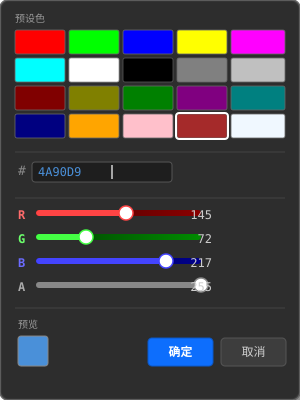

4.5 ColorPicker（颜色选择器）
ColorPicker 是弹窗式取色器：闭合态显示色块 + Hex 文本，点击展开弹窗（预设色网格 + RGB 滑块 + Hex 输入），确定或按 Enter 提交颜色。Hex 输入框支持 #RRGGBB / #RRGGBBAA，按 Enter 或点击弹窗「确定」后生效（便于粘贴完整值）。继承链：ColorPicker → Panel → ControlImpl → Control。

ColorPicker 弹窗布局示意
4.5.1 控件的创建
// C++
ColorPicker(Control* parent, SRect rect, float xScale = 1.0f, float yScale = 1.0f);
ColorPickerBuilder(parent, SRect(X1, 30, 96, 24))
.setColor("#FF0000").setOnColorChanged(cb).build();
// C ABI
UIControlHandle cp = UICornerstone_CreateColorPicker(g_inst, 240, 498, 96, 24, "#FF6600", 1.0f, 1.0f);
// JSON
{ "type": "color-picker", "id": "testColorPicker",
"rect": { "x": 240, "y": 498, "w": 96, "h": 24 },
"color": "#FF6600",
"presets": ["#FF0000", "#00FF00", "#0000FF", "#FFFF00", "#FF00FF"],
"presetLayout": { "cols": 5, "rows": 1 },
"events": { "onColorChanged": "onColorChanged" } }4.5.2 控件的属性
| 属性 | 类型 | 默认值 | 说明 |
|---|---|---|---|
background / border | StateColor | 主题 | 通用状态色（继承 Panel） |
closed-font-size | Int | 12 | 闭合态 Hex 字号 |
closed-swatch-size | Float | 16 | 闭合态色块大小 |
closed-text | Color | #DBDBDB | 闭合态文本色（C ABI SetColor(ctl, "closed-text", ...)） |
color | String | — | 当前颜色 hex（读写，如 "#FF6600"，经 Get/SetString） |
popup-bg | Color | #3C3C41 | 弹窗背景色（C ABI SetColor(ctl, "popup-bg", ...)） |
preset-cols / preset-rows | Int | 5 / 4 | 预设网格列 / 行 |
4.5.3 控件的回调
| 回调 / 事件名 | 触发时机 | 参数 |
|---|---|---|
onColorChanged（C ABI 事件 color-changed） | 点击弹窗「确定」或按 Enter 提交时；取消 / ESC / 外部点击不触发 | (shared_ptr<ColorPicker>, const SColor&) / UIEventData.data.color{r,g,b,a} |
4.5.4 JSON 语法
{
"type": "color-picker",
"id": "testColorPicker",
"rect": { "x": 240, "y": 498, "w": 96, "h": 24 },
"color": "#FF6600",
"presets": ["#FF0000", "#00FF00", "#0000FF", "#FFFF00", "#FF00FF"],
"presetLayout": { "cols": 5, "rows": 1 },
"swatchSize": 16.0,
"closedFontSize": 12,
"closedTextColor": "#DBDBDB",
"popupBGColor": "#303030",
"events": { "onColorChanged": "onColorChanged" }
}4.5.5 C++ Binding 样例
// Binding 工厂
Control cp = ui->CreateColorPicker(240, 498, 96, 24, "#FF6600");
cp.SetColor("closed-text", UIColor{0xDD, 0xDD, 0xDD, 0xFF});
cp.SetCallback(PropertyNames::kEventColorChanged, [](const Event& e) {
// 颜色负载读取
});
// C++ 核心库（Builder）
auto cp2 = ColorPickerBuilder(nullptr, SRect(X1, 30, 96, 24))
.setColor("#FF0000")
.setPresetColors({ "#FF0000", "#00FF00", "#0000FF" })
.setOnColorChanged([](shared_ptr, const SColor& color) {
cout << "Color changed to: " << color.toHex(false) << endl;
})
.build();
BENCH->addControl(cp2); 4.5.6 C ABI 调用样例
// 初始颜色以 "#RRGGBB" 字符串传入
UIControlHandle cp = UICornerstone_CreateColorPicker(g_inst, 20, 20, 120, 28, "#4A90D9", 1.0f, 1.0f);
UICornerstone_SetString(g_inst, cp, "color", "#3A80C9");
UICornerstone_SetInt(g_inst, cp, "preset-rows", 4);
static void onColorChanged(UIControlHandle ctl, const UIEventData* ev, void* ud) {
/* ev->data.color 为新颜色 r/g/b/a */
}
UICornerstone_SetCallback(g_inst, cp, "color-changed", onColorChanged, NULL);4.5.7 控件的方法（核心引擎内部 API，点击展开）
本节为核心引擎 C++ 类（include/ 头文件）的公开方法，仅源码级集成（直接使用核心类）可调用。只使用 C ABI / C++ Binding 的用户请按「控件的属性」键名（Set*/Get*）与「控件的回调」事件名（SetCallback）等价操作。
| 方法 | 说明 |
|---|---|
getColor() / getColorHex() | 获取当前颜色 / "#RRGGBB" 文本 |
isPopupVisible() | 弹窗是否打开 |
setCallbackProperty(event, cb, userData) | 回调属性注册 |
setClosedSwatchSize(float) / setClosedFontSize(int) / setClosedTextColor(SColor) | 闭合态色块大小（16）/ Hex 字号（12）/ 文本色（#DBDBDB） |
setColor(const SColor&) / setColor(const string& hex) | 设置颜色（支持 "#RRGGBB" / "#RRGGBBAA"） |
setColorProperty / setIntProperty / setFloatProperty / setStringProperty（+getter） | 属性系统分发 |
setOnColorChanged(OnColorChangedHandler) | 颜色变化回调 |
setPopupBGColor(SColor) | 弹窗背景色（默认 #3C3C41） |
setPresetColors(const vector<SColor>&) | 设置预设色列表 |
setPresetLayout(int cols, int rows) / getPresetCols() / getPresetRows() | 预设色网格列 / 行数 |